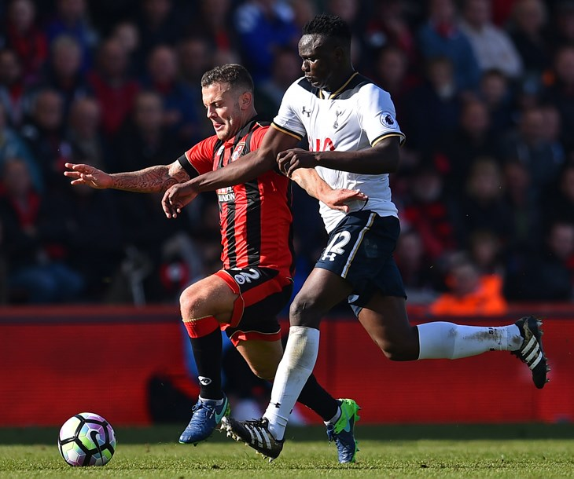
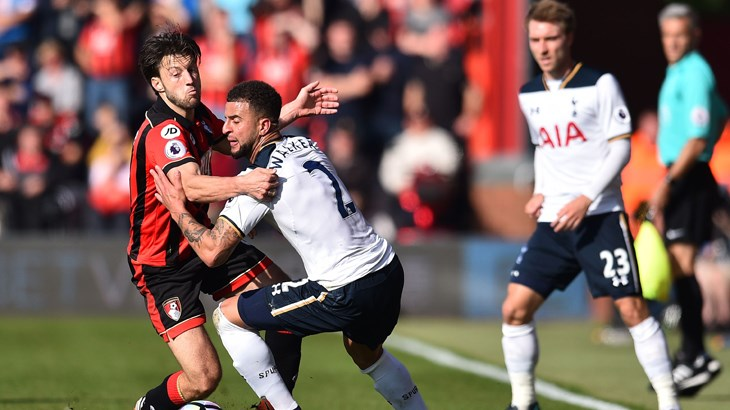
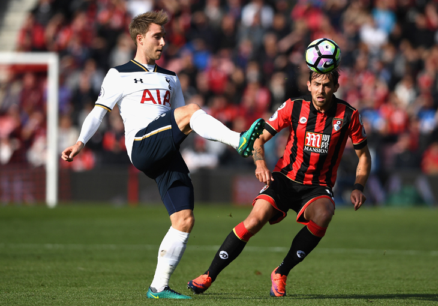
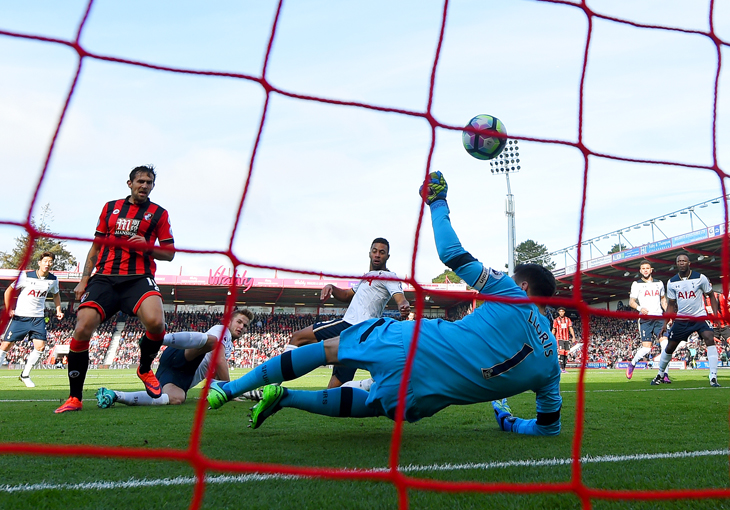
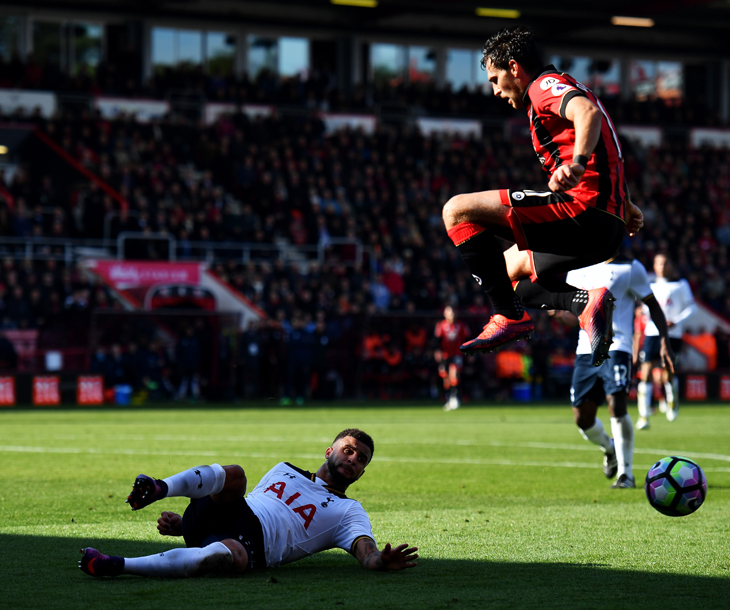

Victor Wanyama’s dominant performances continued as he took Man of the Match honours from our supporters after Saturday’s goalless draw with Bournemouth.

The Kenyan international has either won or been runner-up in our fans' Man of the Match survey on Twitter and Facebook for the last four games in a row - last claiming the prize against Manchester City at the start of this month.
His efforts in central midfield on the south coast saw him win the latest poll with 48.6 per cent of the votes.
Midfield colleague Mousa Dembele, making only his second league start of the season, was runner-up with 19.9 per cent, edging out close friend and fellow Belgian international Jan Vertonghen by 0.1 per cent.
MAN OF THE MATCH - BOURNEMOUTH AWAY
Victor Wanyama - 48.6%
Mousa Dembele - 19.9%
Jan Vertonghen - 19.8%
Kyle Walker - 11.7%
In total, 16,336 votes were cast. Thanks to everyone who took part!
Watch our interview with Victor Wanyama
Share this story
ERIKSEN, LLORIS AND WALKER ON FINDING SOLUTIONS AFTER BOURNEMOUTH DRAW
Christian Eriksen, Hugo Lloris and Kyle Walker all shared their views with us after Saturday's stalemate at Bournemouth.

Hugo was once again in tremendous form to deny former Spur Charlie Daniels in the opening stages at the Vitality Stadium.
At the other end, Erik Lamela hit the woodwork but ultimately neither side could find the breakthrough and we were forced to settle for a point for the third game in a row in all competitions.
Christian Eriksen
On trying to find key passes
"It's always difficult. They stayed compact and didn’t let any runners between them. We still had our chances, the balls we played between were dangerous but not dangerous enough. You keep trying and as an offensive player, you always look for that opportunity to create something, but there wasn’t many chances to do that. You have to try to find the right solutions when you are on the ball and if you are under pressure, you play it back, if not you go forward and try to create."

On the pattern of the game
"It was a hard-fought game on every level, in every position. It was a difficult game. We tried to play offensively, tried to go forward but when we lost it they looked long and looked for the counter, so we had to go all the way back and start again. We had to build up again and again - you get tired at the end if you play at the level we both played."
On the players' energy levels
"We’re in very good shape and you saw that today. If you don’t score or take chances you look a little more tired but Bournemouth were a bit fresher, they didn’t play midweek, although the team is fit and everyone wants to play every game, so that’s a good thing."
Hugo Lloris
On the result
"I always say when you cannot win, you must not lose, but it’s three draws in a row now and we needed to score. Perhaps we need to be more aggressive in the last 30 yards, in our runs, in our passes. Look, it’s football and there are ups and downs. We had good control of the game apart from the first 10 or 15 minutes when they had a lot of pressure and had a good chance. It’s not enough because we have ambition, so we’re not happy with a point."

On his early save
"It was with my left leg. You just try to react and get the ball away and it worked today. It’s not the most important thing but okay, it helped the team stay in the game. Defensively, we need to be positive because it’s another clean sheet and it’s not an anomaly - we are consistent defensively. I used to always repeat that it has to be our basics, so defensively it’s good, we didn’t give them many chances but we need to improve offensively and that’s the responsibility of all the players, not just one, two or three."
Kyle Walker
On Hugo's latest heroics
"Full credit to Hugo, he’s a top-class goalkeeper and he shows it week in, week out. He’s a great captain as well and it’s becoming normal to see that now! We’ve got quality in the team and on the bench to hurt teams but it’s just finding that finishing touch that we’re just short of in the last couple of weeks."

On nine Premier League games unbeaten and four goals conceded
"That’s the positive, definitely. As a defender I’m looking for clean sheets. We’re still undefeated, which is a great achievement and long may it continue."
Watch Spurs TV's favourite skills against Crystal Palace